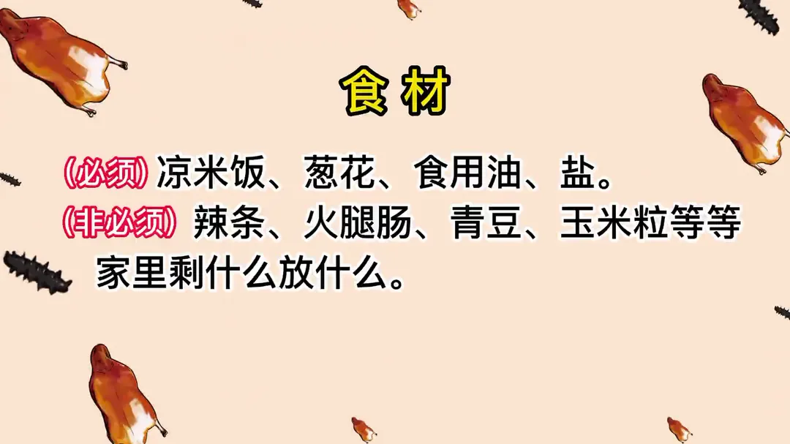
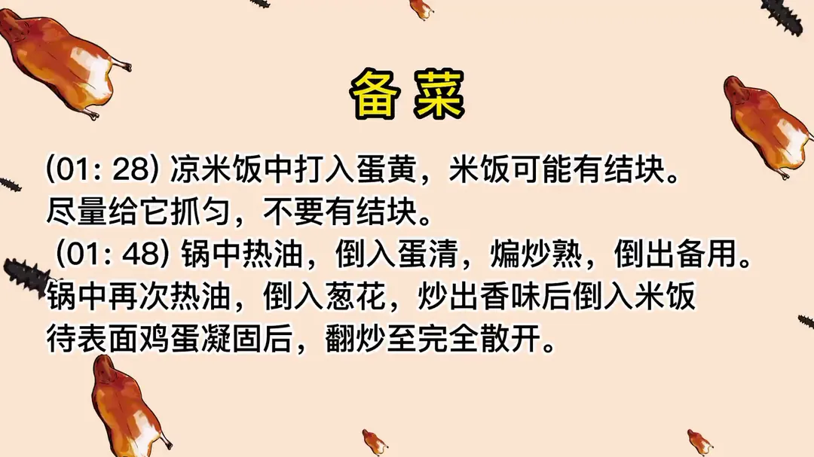
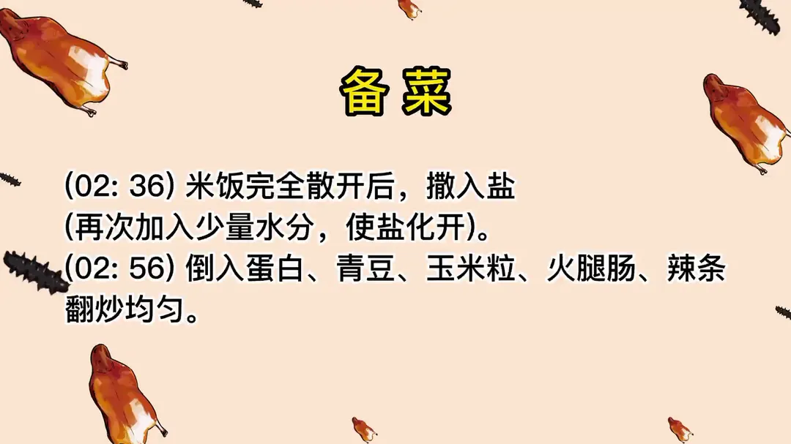

黄金炒饭
隋卞一做。只用凉米饭、葱花、食用油和盐这几样必须的，蛋黄先和米饭抓匀，蛋清单独炒熟备用，米饭炒散后撒盐化开，最后拌入配料。
原视频：https://www.bilibili.com/video/BV1os4y1G7UH
食材
凉米饭、葱花、食用油 等 8 样
| 类别 | 用料 | 用量 |
|---|---|---|
| 必须 | 凉米饭 | 适量 |
| 必须 | 葱花 | 适量 |
| 必须 | 食用油 | 适量 |
| 必须 | 盐 | 适量 |
| 非必须 | 辣条 | 适量 |
| 非必须 | 火腿肠 | 适量 |
| 非必须 | 青豆 | 适量 |
| 非必须 | 玉米粒 | 适量 |
步骤
- 拌蛋黄：凉米饭中打入蛋黄，米饭可能有结块，尽量给它抓匀，不要有结块。
- 炒蛋清：锅中热油，倒入蛋清，煸炒熟，倒出备用。
- 炒米饭：锅中再次热油，倒入葱花，炒出香味后倒入米饭，待表面鸡蛋凝固后，翻炒至完全散开。
- 加盐：米饭完全散开后撒入盐，再次加入少量水分，使盐化开。
- 下配料：倒入蛋白、青豆、玉米粒、火腿肠、辣条，翻炒均匀。
讲解要点
难度：★☆☆☆☆（步骤简单，难点是耐心炒散、把火候炒够）
为什么这么做
- 必须用凉米饭：热米饭、新米一加热就黏，炒不散，必须放凉了再炒，隔不隔夜无所谓。
- 蛋黄先和米饭抓匀：蛋黄把米粒一粒粒裹住，炒出来金黄色，蛋和米才能融合在一起。
- 蛋清单独炒熟备用：蛋清和蛋黄一起下锅会黏成蛋块、炒不散，分开炒才不会拖住米饭。
- 米饭下锅先别急着动：让表面裹的蛋黄先凝固，再扒拉，不然蛋液全脱下来黏成一片。
- 边炒边用炒勺压：米粒上的小疙瘩要压开，炒到粒粒分明。
- 盐在中间放、再补一点水：米饭炒干后进不去咸味，要在半程放盐；加一点点水把盐化开，咸味才铺得匀。
- 一定要炒够火候：火候不够鸡蛋的腥味会反出来，炒透了才只有蛋香葱香。
容易翻车
- 葱花只为增香，油不要多，太多就腻了。
- 配料随意，家里剩什么放什么，什么都不放只撒葱花也行。
原片尾卡



原片文案
AI 字幕校准稿
我说实话，可能真的有点高估你们的能力了。主要是没想到炝锅面那一期你们那么多人喜欢，面都来了，那么今天再教你们一个有手就行的——中华小当家同款的黄金炒饭。
先给你们看一下配料，这都是小李喜欢的，我问过她想吃什么、里面放什么，都是她挑的：火腿肠、辣条、玉米粒、青椒，没有什么固定的，其实什么都不放也行，就干撒点葱花也可以。主要是你们家里边剩什么了就放点什么，大葱花、大蒜、大姜，什么臭豆腐、酱豆腐都可以放，没问题。
说到有手就行，图一个方便。如果要是我们做，大小一致都要给它切，按规矩——毕竟我们是拍视频，就要规矩一点。你们在家的话，手掰掰呀、摇摇呀、搅不搅拌都可以，随意。这个辣条也是我中午吃剩的。
再有剩了米饭。我平常听到有同志说一个误区：炒饭必须是剩饭吗？这不一定。因为热米饭刚熟的时候，特别是新米，一加热就很黏，一冷就好一些了，不一定非得是隔夜，隔夜并不重要，主要米饭得是凉的；热的用我们这种方法没法炒。
往凉米饭里打几个蛋黄，蛋清别扔啊。把这个抓匀，拌均匀就行了，拌到米饭一粒一粒的。拌完之后咱们开始炒：锅里放油，赶紧把鸡蛋清倒里边，轻轻煸，炒熟了就行，倒出来。
锅里再次放油，葱花放进去炒出香味。炒饭要有香味，但是不能太油，你看我们这油放的就不是很多。炒出香味之后把米饭倒进去，放进去之后不用着急动它，因为表面上它有鸡蛋，让那表面的鸡蛋凝固了之后，你再扒拉它。好多同志说炒出来的鸡蛋都掉了，就是在这一步出现了错误。要边炒边压着，因为它有小疙瘩，没有散开的米粒，所以要拿炒勺压一压。这个菜虽然简单，但是中间那些小细节还是需要注意的，对，还是得学。
鸡蛋都凝固了，米饭也成一粒粒的，这会儿可以少放点盐。因为这米饭粒如果你炒得特别干，它就不进盐味了，所以盐要在中间放。如果怕这个盐不化，可以少来点水，让它一点一点把这点盐全部化开。
然后我们放入这些配料，蛋白也可以放进去了，还有青椒、玉米粒。这碗饭没意思，师傅这么翻没意思，我给你来个倒翻、前翻、后翻、侧翻。葱花放进去，增加点香味，关火。你们看看是不是粒粒分明，绝对一粒是一粒的黄金炒饭。
来，兄弟尝尝锅里黄金炒饭，你点的辣条火腿肠。我都没见过这东西，我都从来不吃这个东西。辣条吃一口是一个特别强的东西。这里面就是那种葱香味，还是吃得有葱香味，然后是辣条的味道。米饭干爽有嚼劲，但是它不硬；蛋黄全部裹在米饭上面，所以米饭跟鸡蛋特别融合。所以这个米饭炒的时候一定要炒够火候，炒不过火候，这鸡蛋腥味就反出来了，这是一个关键点。
他好像比炝锅面还要再简单点，但主要是味道完全不输炝锅面。今天这个炒饭这么成功，主要归功于谁呢？归我们的小李同志，米饭做得非常好，选得也非常好，就是料选得好，有一半功劳，我只是起到一个搅拌的工作。这期的视频，我的人生菜谱里面除了炝锅面，今天又加了第二道。